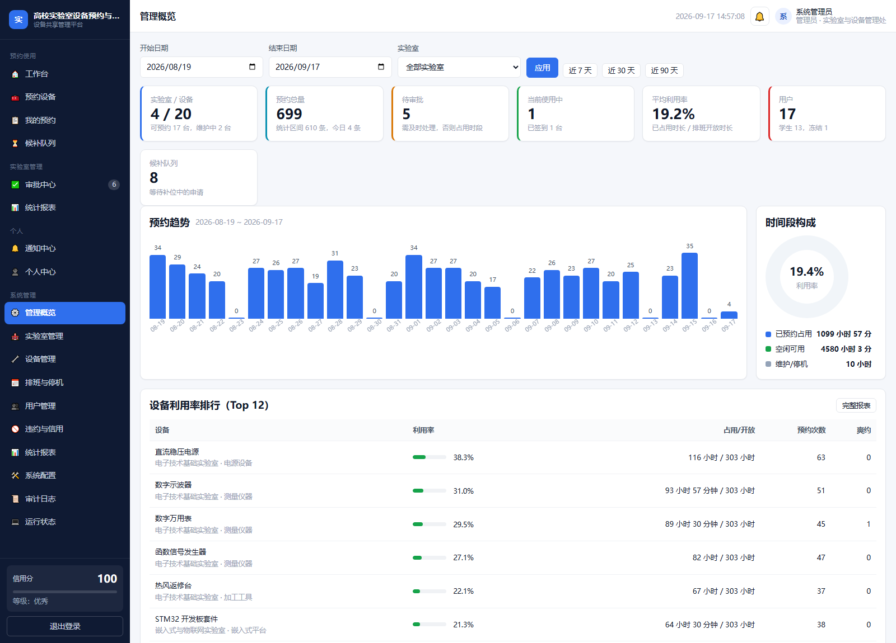

把「这台设备现在能不能约」拆解为 12 条可解释的规则，用区间代数推导可用时段， 用写锁 + BEGIN IMMEDIATE + 事务内二次校验保证并发抢同一时段不会产生双重预约， 并把预约、审批、签到、违约、信用、利用率统计做成一条完整闭环。

高校贵重仪器（示波器、GPU 服务器、3D 打印机…）的共享存在四个典型痛点，本系统逐条给出工程解法。
纸质登记本/微信群无法判断冲突，常出现两人同抢一台设备。
解法：R01~R12 规则引擎 + 区间重叠检测，冲突时返回冲突时段与占用者。
预约成功却不到场，黄金时段被浪费。
解法：6 位签到码 + 签到时间窗；超期未签到由后台作业判定爽约、扣信用分并释放时段。
计量校准、假期封闭、厂家维护等不可用时段没有纳入统一约束。
解法：停机计划作为区间差集的减项参与校验（R09），创建时自动通知受影响预约人。
无法回答"哪台设备闲置、哪个时段是高峰"。
解法：利用率以真实排班开放时长为分母推导，配套热力图、趋势、履约率与 CSV 导出。
三类角色各自看到该看的：学生预约使用、教师审批、管理员掌握全局。
预约校验被拆成 12 条独立规则，按「零成本校验 → 时间窗校验 → 需要查库的区间与额度校验」的顺序短路返回， 每条失败都带机器可读的规则码与中文说明，前端据此做差异化引导。
| 规则 | 判定内容 | 失败时的用户提示要点 |
|---|---|---|
| R01 | 设备存在且状态为「可预约」 | 告知设备当前状态（维护中／已停用） |
| R02 | 所属实验室处于开放状态 | 告知实验室已停用 |
| R03 | 起止时间为合法数值且 start < end | 时间格式或逻辑错误 |
| R04 | 起点不早于当前时刻 | 不可预约已过去的时间 |
| R05 | 满足最小提前预约分钟数 | 告知需提前多少分钟 |
| R06 | 不超过最大提前预约天数 | 告知最多可提前几天 |
| R07 | 时长在设备 min_minutes ~ max_minutes 内 | 告知该设备的时长上下限 |
| R08 | 请求区间被某一段开放排班完整覆盖 | 告知所选时段不在开放时间内 |
| R09 | 不与停机／校准／封闭计划重叠 | 返回停机原因、类型与起止时间 |
| R10 | 该设备该时段无其它占用（区间重叠检测） | 返回冲突时段、状态与占用者，并引导加入候补 |
| R11 | 不与本人其它预约重叠 | 返回本人冲突预约的设备与时段 |
| R12 | 账号状态正常、在途数量未超上限、周额度充足 | 返回已用额度与额度上限等明细 |
所有时间区间为 [start, end)：09:00-10:00 与 10:00-11:00 相邻但不冲突，符合真实排期习惯。
// 冲突判定 overlaps(A, B) ⇔ A.start < B.end ∧ B.start < A.end // 可用时段 = 排班 −（占用 ∪ 停机） Free(v, day) = Schedule(v, day) − Bookings(v) − Blackouts(v)
写操作统一走 writeTx()：进程内互斥锁串行化，BEGIN IMMEDIATE 立即取写锁，
并在事务内重新跑一遍完整校验后才插入，彻底消除「先查后写」的竞态窗口。
await acquireWriteLock() # 进程内互斥 BEGIN IMMEDIATE # 立即取得写锁 validateBookingRequest() # 事务内二次校验 INSERT INTO bookings ... COMMIT
五层结构，上层可依赖下层、下层不反向依赖；运行时零第三方依赖，无需 npm install。
node:http：手写极简路由器（支持路径参数、区分 404/405），无框架依赖crypto.scrypt（N=16384, r=8, p=1）加盐散列 + timingSafeEqual 校验以下均为本系统实际运行时的界面（非设计稿、非示意图），数据来自内置演示数据集。 点击任意图片可放大查看原图。
四层可执行验证，全部通过；测试使用内存数据库，不影响演示数据。
只要 Node.js ≥ 22.5（数据库使用内置 node:sqlite），无需安装任何依赖。
# 1) 克隆 git clone https://github.com/KyoukaAlice/lab-equipment-booking.git cd lab-equipment-booking # 2) 启动（首次启动自动建库并生成演示数据） npm start # 或 Windows 双击：scripts\start.bat # 3) 打开浏览器 http://127.0.0.1:3000
123456）| 账号 | 角色与用途 |
|---|---|
admin | 管理员，全部权限 |
teacher | 实验室负责人，可审批预约 |
teacher2 / teacher3 | 其它实验室负责人 |
student ~ student11 | 学生；student5 信用分 55 已被自动冻结，用于演示失信限制 |
npm run reset 或双击 scripts\reset-data.bat。